Bienvenidos a la sección de 4º de ESO.
El libro de texto que usaremos a lo largo del curso será "Educación Plástica, Visual y Audiovisual. Graphos C" de la editorial McGraw Hill. Aquí tenéis la portada del libro.
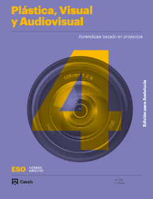
MATERIAL NECESARIO PARA LA ASIGNATURA:
PARA EL DIBUJO TÉCNICO |
|
| La gran mayoría de las actividades se harán en papel de dibujo de formato A4, el cual tiene unas medidas de 29,7 cm. por 21 cm. Se le hará el cajetín que se explica en el apartado de Presentaciones Flash. | 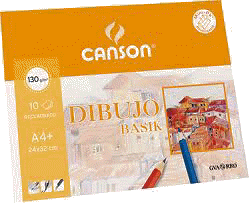 |
| - Un juego de plantillas (escuadra y cartabón): sin escalón para que se deslicen sin problemas. El tamaño ideal es el de 28 cm.
Son dos triángulos rectángulos. La escuadra el un triángulo isósceles y el cartabón es un triángulo escaleno. Un juego de plantillas son compañeras cuando la hipotenusa de la escuadra mide lo mismo que el cateto mayor del cartabón. |
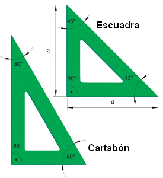 |
| - Regla milimetrada: de 20 a 30 cm. de longitud. | 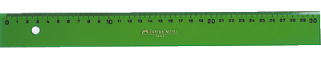 |
| - Bigotera o compás grande: del tamaño de un bolígrafo y que no tenga piezas de plástico.
Una bigotera es mejor que un compás ya que tiene una ruedecilla en el centro que permite abrir y cerrar las patillas con mayor precisión y sin que éstas se muevan al usarlo. |
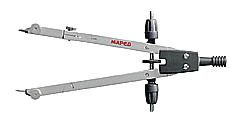 |
| - Lápiz duro 4H | 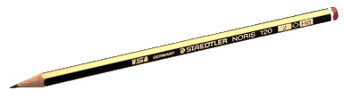 |
| - Goma blanda y blanca
- Sacapuntas |
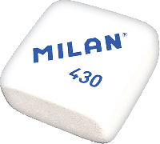 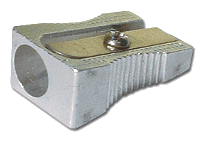 |
PARA EL DIBUJO ARTÍSTICO |
|
| La gran mayoría de las actividades se harán en papel de dibujo de formato A4, el cual tiene unas medidas de 29,7 cm. por 21 cm. Se le hará el cajetín que se explica en el apartado de Presentaciones Flash. | |
| - Lápices blandos HB y ocasionalmente 3B | 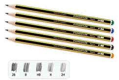 |
| - Goma blanda y blanca
- Sacapuntas |
|
| - Lápices de colores y/o ceras |
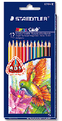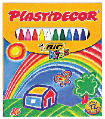 |
| - Rotuladores finos | 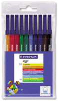 |
|
- Témperas: blanca, negra, amarillo, cyan y magenta - Pinceles: uno fino y otro grueso |
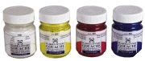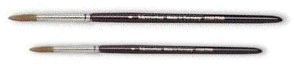 |
| - Otros materiales como cartulinas, papeles de colores, tijeras, pegamento, difumino etc... |
EVALUACIÓN
La evaluación se llevará a cabo con las siguientes herramientas:
INSTRUMENTOS DE EVALUACIÓN |
VALOR EN LA NOTA FINAL |
|
1.- Las actividades y ejercicios prácticos. Se valorarán:
2.- Los exámenes teóricos y/o prácticos, sobre los contenidos de la materia. |
80 % |
|
3.- La actitud en el trabajo y el estudio diario y el comportamiento del alumno en clase, que se valorará según las siguientes pautas:
|
20 % |
Estas se tendrán en cuenta en todas las evaluaciones y en la evaluación ordinaria de Junio.
Recuperación final de curso: se presentarán aquellos alumnos que tengan alguna evaluación pendiente y se examinarán solamente de las evaluaciones que tengan suspensas. Deberán presentar las actividades no presentadas o no aprobadas.
Examen de la convocatoria extraordinaria: se presentarán aquellos alumnos que no hayan aprobado en Junio y se examinarán de toda la asignatura.